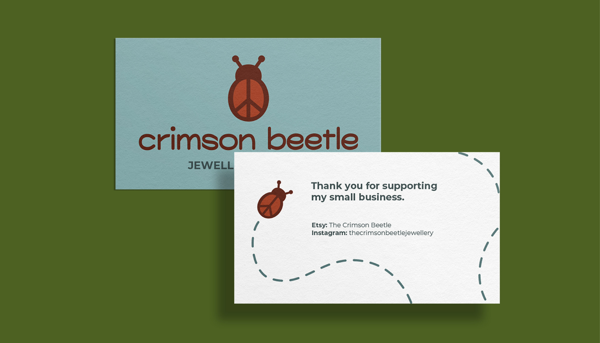
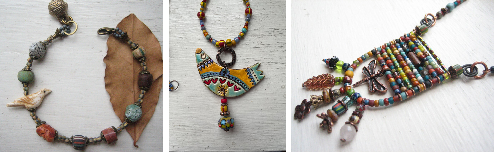
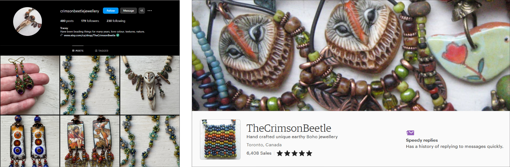
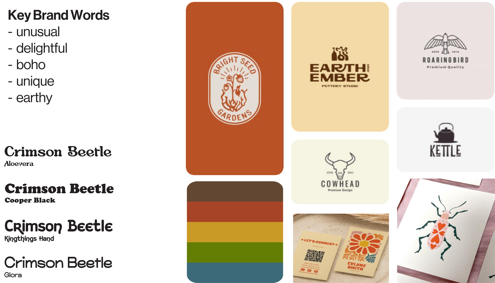
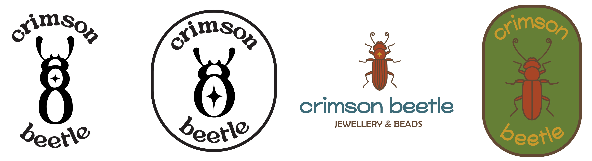
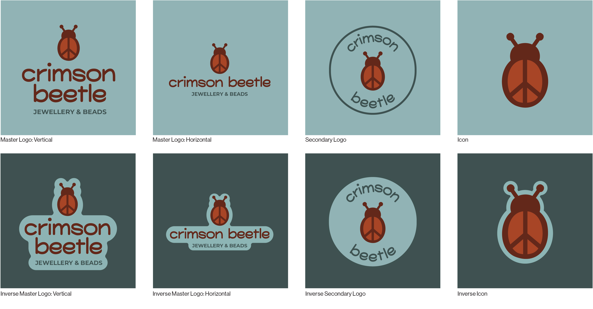
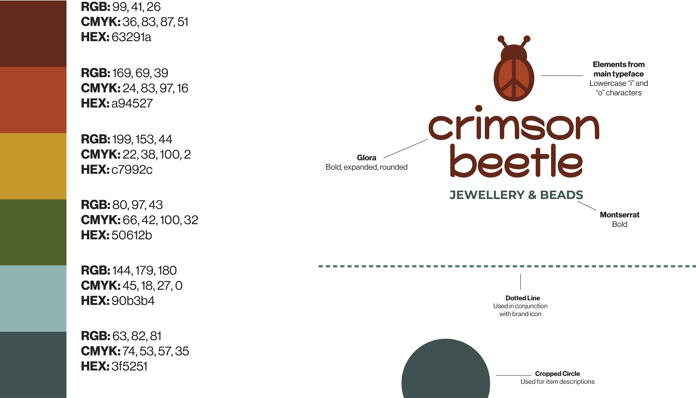
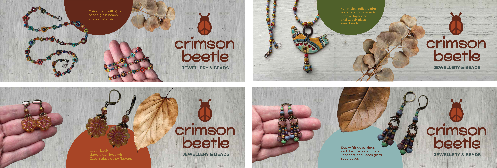
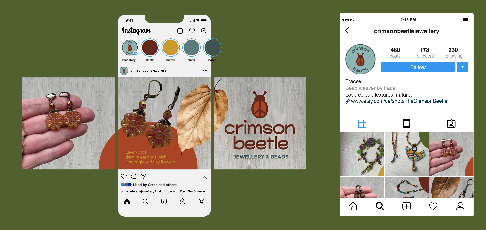
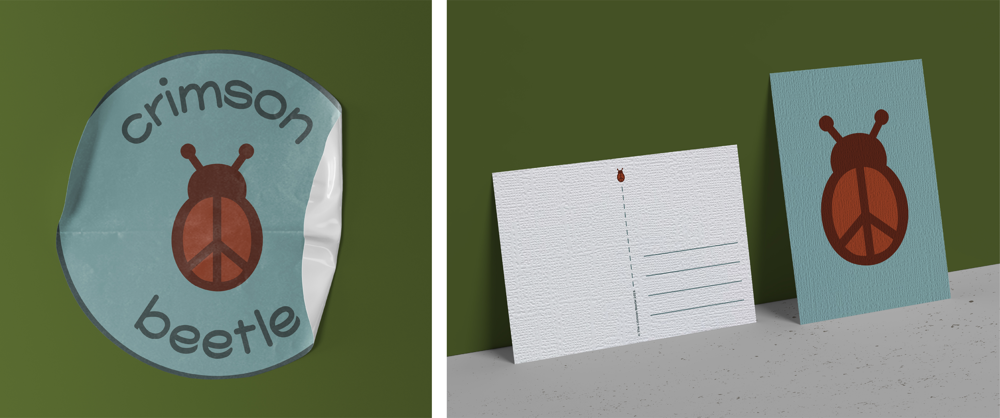

The Crimson Beetle is an online jewellery shop on Etsy. The owner, Tracey Lee, is an avid bead collector and weaver based out of Toronto. In a three-part branding project, I undertook the visual identity of the Crimson Beetle, applied it to Tracey's social media presence, and created a practical, print-based “thank you” package to include with a customer's purchase from her storefront.
Tracey has an extremely consistent style of photography. When advertising her handmade
work,
she uses a distressed white-paint background and occassionally includes a dried leaf under the item or
cropped out of the image. This motif is repeated across both her Etsy page and her Instagram. Her Instagram
has the
same pieces as her storefront, but directs users and customers back to her Etsy site for purchase.
Despite continuous style choices throughout both social media sites, the Crimson Beetle does not have a
logo. The profile picture for the shop differs across each page. This could be due to the shape of each -
Etsy is
a square with rounded corners, and Instagram has a perfect circle. I set out to create a set of logos for
the shop that would work for all shapes, sizes, and unify the brand across both sites.


Below is the working moodboard I started with for the Crimson Beetle brand. I pulled key descriptor words from the “about” sections of Tracey's Etsy and Instagram Pages. The brand identity should reflect this wordlist - unique, boho, and earthy. I put together some inspiration for the logo and did a typographic study of possible options to use, as well as put together a preliminary color palette expressing some of the key colors I found within the existing photography. I wanted the logo to blend seamlessly into the existing shop identity, but walked the fine line between "hipster" and "hippie" (the latter which the Crimson Beetle leans more towards).

After eliminating a few of the typefaces I chose from my typographic study, I started out
with making a master logo for the brand. The two on the left use Alovera as the main typeface and elements
from
it within the beetle. This iteration didnt feel right for the existing brand - it was staying too far from
the
"earthy" and "boho" look I was going for.
The two on the right offer a different style of
illustration
and typography, but still wasnt working for the Crimson Beetle. It felt more like something that would be a
Boy
Scout patch rather than a beaded jewelery logo. In my final iteration and design, I combined elements from
both
of these ideas to create a logo that falls in line with key brand words and identity.

The final logo variations are designed to be versatile and are able to be applied in any setting, whether it be digital or print. The secondary is to be used as profile pictures for instagram, but could also be used for stickers, stamps, and more. The vertical master logo is ideal for the Etsy storefront. The peace sign within the ladybug icon incorporates the delightful and unique aspects of the brand, and can stand on its own.


The Instagram carousels combine Tracey's original photography, dried plants, colors from the brand palette, typography, and the vertical master logo. Sitting at three square slides each, the layout is dynamic enough to lead a viewer though the post and learn about the piece being advertised. The last slide of each post features the Crimson Beetle logo, and the caption directs the viewer to the Etsy site via copy and a hyperlink.


The last part of the Crimson Beetle project is making a thank-you package. Included with each purchase, this package will be sent to customers as a token of appreciation. The branded print ephemera contains a sticker featuring the secondary logo, a postcard that the customer can display or mail, and a business card with the shop contact on the back.

Support Tracey Lee by visiting The Crimson Beetle on Etsy and follow @crimsonbeetlejewellery on Instagram.